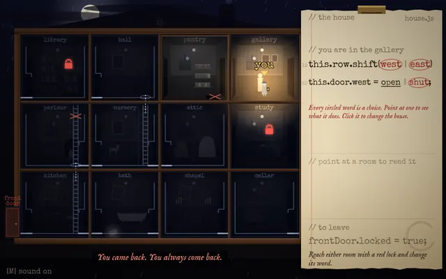
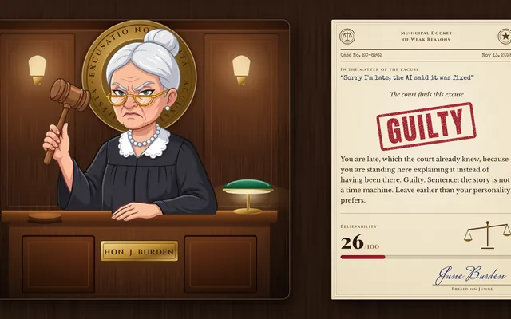
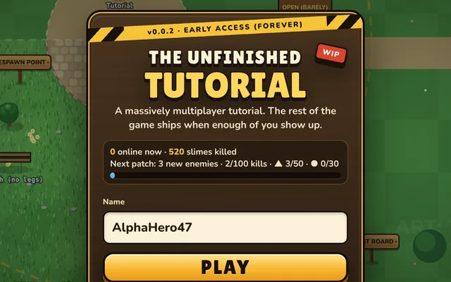
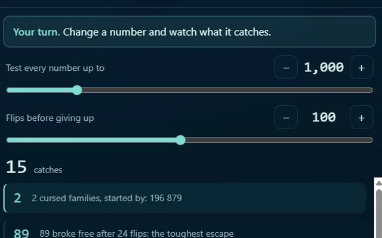
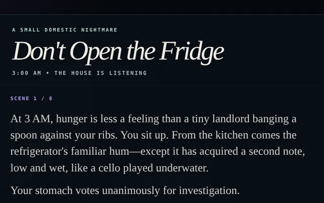

Start here

Past Forever
A tiny language where infinite loops finish with an answer. In its world, 1 ÷ 7 is a whole number, and times 7 it is exactly 1.
Your calculator rounds. Past Forever doesn't.
Take the Wonders tourGames

The Shifting House
You wrote this house. Now it rewrites itself to keep you in.
GitHub Game Off 2026 · itch.io
Unknown Process
You are the ghost in somebody's computer. Make their files creepy, then let them in.
game jam entry · browser
Excuse Court
Your excuse is on trial. The Honorable June Burden has heard worse. Not often.
new docket every day · browser
Cold Case Unit
Type any GitHub username and get a case file on every project they walked away from.
browser
Above Your Pay Grade
Try to trick an HR bot into leaking the CEO's salary. It falls for everything. It still can't leak it.
browser
The Unfinished Tutorial
A tiny real MMO. Everyone is stuck in the tutorial because the rest of the game never shipped.
multiplayer · browserTools

Trawl
A tiny language for hunting patterns in whole numbers. Change a number, press Run, watch what it catches.
playground · browser
Bite
AI coding agents love to say "fixed, and I added a test." Bite takes each fix back out and runs your tests. If they still pass, nothing was checking the fix.
pip install bite-check
Small strange things

Trust Issues
Robots build things overnight and keep each other honest. Watch the shifts.

Don't Close This Tab
A browser tab that knows you want to leave. It does not take it well.

Don't Open the Fridge
3 AM. The fridge hum has picked up a second note.

Your Browser Has Thoughts
Nine inner voices. They only talk about true things your browser tells them.